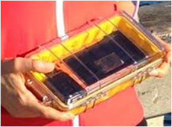

Stories from bots and bot owners as the bots travel the world.
August 17, 2014 by Sarah
The First Launch! Aug. 4, 5:30 pm, Pier in San Diego
The bot followed the current to shore and was found by Carole in San Diego!

This blog highlights spectacular stories from our community!
Back to top